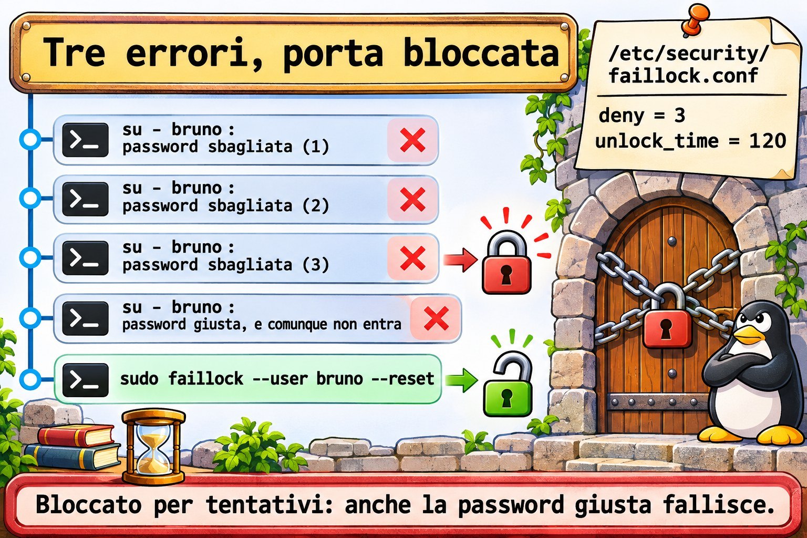

Lezione 10.2 · Password e scadenza
In Windows la politica delle password vive in una GPO: lunghezza minima, complessità, cronologia, blocco dopo un certo numero di tentativi. Spunti le caselle e ogni login inizia a obbedire. In Linux a decidere è PAM, una pila di moduli che ogni programma di login consulta. Nella Lezione 2.6 hai usato chage su un account. In questa lezione monti la politica intera: qualità della password, blocco per tentativi e scadenza, e la applichi agli account che esistono già.
Il cuore di questa lezione: leggere una pila di PAM in
/etc/pam.d/; attivare funzioni conauthselect(Rocky) opam-auth-update(Debian), senza mai modificare i file generati; definire la qualità in/etc/security/pwquality.conf.d/*.conf; bloccare i tentativi conpam_faillocke sbloccare confaillock --reset; e ricordare chelogin.defsvale solo per gli account nuovi: quelli vecchi ricevonochage. Il resto è approfondimento.
| Scheda | |
|---|---|
| Modulo | M10 · Utenti e accesso privilegiato, lezione 2 di 4 |
| Quando | Settimana 15 |
| Alla fine | Definisci e verifichi una politica delle password, blocchi e sblocchi account per tentativi e applichi la scadenza ad account esistenti |
| Prerequisiti | Lezioni 2.6 e 10.1 |
| Durata | circa 2h |
| Snapshot | m10a2-inicio e m10a2-fim su rocky-lab e debian-lab |
1 · Riscaldamento
Rispondi prima di leggere.
- Hai messo
PASS_MAX_DAYS 90in/etc/login.defs. La password di Bruno scade tra 90 giorni? rootcambia la password di Ana in123. Il sistema accetta?- L'account di Bruno è stato bloccato per password sbagliata. Entra via SSH con la chiave?
2 · Perché conta
| La richiesta | La risposta sbagliata | Cosa provoca |
|---|---|---|
| "Esigi password di 12 caratteri" | Modificare /etc/pam.d/system-auth su Rocky | Il prossimo authselect annulla la modifica senza avvisare |
| "Le password devono scadere in 90 giorni" | Cambiare solo login.defs | Gli account che esistono già continuano a non scadere |
| "Blocca dopo 3 tentativi" | deny=3 senza pensare a unlock_time | Un robot blocca gli account di tutti, e solo tu li sblocchi |
| "L'utente è bloccato" | passwd -u | Non è stato passwd a bloccare: è faillock |
| "Lo stagista deve cambiare la password al primo accesso" | Mandare un'e-mail per chiederlo | Nessuno la cambia; la password provvisoria resta per sempre |
3 · Modello mentale
Pensa a una portineria con quattro sportelli, sempre nello stesso ordine. Il primo controlla chi sei (
auth). Il secondo controlla se puoi entrare adesso (account): account scaduto, bloccato, fuori orario. Il terzo apre solo quando cambi la password (password) e controlla che quella nuova vada bene. Il quarto prepara la tua sessione (session): limiti, cartella, registrazione. Ogni programma (sshd,su,login,passwd) ha la sua fila, in/etc/pam.d/. E ogni sportello ha più addetti in sequenza: i moduli.
/etc/pam.d/su (cada programa tem um arquivo)
auth → pam_faillock preauth já está trancado?
pam_unix a senha confere?
pam_faillock authfail errou: conta mais uma
account → pam_unix a conta ou a senha venceram?
password → pam_pwquality a senha nova presta?
pam_unix grava o hash no /etc/shadow
session → pam_limits, pam_unix limites e registro| Controllo | Se il modulo dice sì | Se il modulo dice no |
|---|---|---|
required | Prosegue | Prosegue, ma il risultato finale è no |
requisite | Prosegue | Si ferma subito: no |
sufficient | Si ferma subito: sì (se nulla prima è fallito) | Prosegue, come se non esistesse |
optional | Conta solo se è l'unico | Conta solo se è l'unico |
include e substack | Prende le righe da un altro file | Idem |

Ponte Windows
| In Windows | In Linux | Dove il paragone inganna |
|---|---|---|
| GPO delle password | pwquality.conf e il modulo pam_pwquality | Vale solo al cambio di password, e root può scavalcarla |
| Soglia di blocco dell'account | pam_faillock e faillock.conf | Su Rocky si attiva con authselect; su Debian non è attivo |
| Validità massima della password | chage -M per account | login.defs definisce solo il default di chi deve ancora nascere |
| "Cambiamento obbligatorio password all'accesso successivo" | chage -d 0 | Identico, anche nell'effetto |
| Ogni servizio autentica a modo suo | Passano tutti da PAM | Una riga sbagliata in un file blocca il login di tutti |
4 · L'essenziale
Chi scrive i file di PAM
| Rocky | Debian | |
|---|---|---|
| File comuni | system-auth e password-auth | common-auth, common-account, common-password, common-session |
| Chi li genera | authselect | pam-auth-update, a partire da /usr/share/pam-configs/ |
| Vedere lo stato | authselect current | pam-auth-update (menu) e grep sui common-* |
| Attivare una funzione | sudo authselect enable-feature with-faillock | Installare il pacchetto; si registra in pam-auth-update |
| Qualità della password | Già attiva (pam_pwquality) | sudo apt install libpam-pwquality |
Modificare a mano un file generato funziona fino al prossimo aggiornamento, che riscrive tutto. Su Rocky, authselect check avvisa se qualcuno ci ha messo mano.
Qualità della password
sudo tee /etc/security/pwquality.conf.d/10-curso.conf <<'EOF'
minlen = 12
minclass = 3
EOF| Opzione | Significa |
|---|---|
minlen = 12 | Almeno 12 caratteri |
minclass = 3 | Almeno 3 tipi tra minuscole, maiuscole, numeri e simboli |
maxrepeat = 3 | Al massimo 3 caratteri uguali di seguito |
dictcheck = 1 | Rifiuta le parole del dizionario |
enforce_for_root | Rifiuta anche quando è root a cambiarla |
Valgono solo i file che finiscono in .conf dentro pwquality.conf.d/. È il contrario di sudoers.d, che ignora i file con un punto nel nome (Lezione 2.5). Per provare una password senza cambiare nulla, usa pwscore.
Blocco per tentativi
Le regole stanno in /etc/security/faillock.conf, che arriva tutto commentato:
deny = 3
unlock_time = 120deny è il numero di errori che blocca l'account; unlock_time, quanti secondi resta bloccato.
| Comando | Fa |
|---|---|
sudo faillock --user bruno | Mostra gli errori registrati |
sudo faillock --user bruno --reset | Azzera e sblocca |
root non viene bloccato, a meno di even_deny_root. E il blocco vale per chi passa dalla fase auth: il login con chiave in SSH non ci passa.


Scadenza: default nuovo e account vecchi
| Dove | Vale per | Esempio |
|---|---|---|
/etc/login.defs | Account creati dopo | PASS_MAX_DAYS 90, PASS_MIN_DAYS 1, PASS_WARN_AGE 14 |
chage | L'account che indichi | sudo chage -M 90 -m 1 -W 14 ana |
chage -d 0 | Obbliga al cambio al prossimo login | sudo chage -d 0 caio |

Rocky × Debian
| Rocky | Debian | |
|---|---|---|
pam_pwquality | Attivo, con local_users_only | Dopo apt install libpam-pwquality |
pwscore | Pacchetto libpwquality | Pacchetto libpwquality-tools |
pam_faillock | authselect enable-feature with-faillock | Il modulo esiste, ma non è attivo: Approfondire |
| Cronologia delle password | authselect enable-feature with-pwhistory | pam_pwhistory a mano in common-password |
| Log degli errori | /var/log/secure e il journal | /var/log/auth.log, se c'è, e il journal |
5 · Lab guidato
Passo 0 · Snapshot e stato. In Proxmox: qm snapshot 201 m10a2-inicio e qm snapshot 202 m10a2-inicio. Su rocky-lab:
getent passwd ana bruno
sudo passwd -S bruno
sudo chage -l brunoDovrai entrare come Bruno con la password. Se passwd -S mostra LK (o L), dagli una buona password, di almeno 12 caratteri e tre tipi, e annotala nel tuo quaderno del lab:
sudo passwd brunoSe chage -l mostra una data passata in Account expires (resto della Lezione 2.6), togli la scadenza all'account: sudo chage -E -1 bruno.
Passo 1 · Leggere una pila.
sudo authselect current
grep -vE '^\s*(#|$)' /etc/pam.d/su
grep -vE '^\s*(#|$)' /etc/pam.d/system-authauthselect current mostra il profilo (qualcosa come sssd) e le funzioni attive. In su, cerca la riga auth substack system-auth: su non ha regole sue sulle password, prende quelle comuni. In system-auth, trova pam_pwquality allo sportello password e controlla che non ci sia ancora pam_faillock.
sudo authselect checkLa risposta attesa dice che la configurazione attuale è valida. Se qualcuno avesse modificato system-auth a mano, avviserebbe.
Passo 2 · Qualità. Prima, il default:
grep -vE '^\s*(#|$)' /etc/security/pwquality.conf
ls /etc/security/pwquality.conf.d/
echo 'Xk7pQ2wzR' | pwscoreIl file principale arriva tutto commentato, e la cartella vuota o quasi. La password Xk7pQ2wzR ha 9 caratteri e tre classi: con il default passa, e pwscore risponde con un numero da 0 a 100. Usa password casuali come questa nei test: le parole del dizionario, anche con numeri in fondo, vengono rifiutate per un altro motivo e confondono il test. Ora la politica del corso:
sudo tee /etc/security/pwquality.conf.d/10-curso.conf <<'EOF'
minlen = 12
minclass = 3
EOF
echo 'Xk7pQ2wzR' | pwscore
echo 'xk7pq2wzr4tm' | pwscore
echo 'Xk7-pQ2w-zMr4' | pwscoreLa prima ora viene rifiutata perché è corta, la seconda perché ha solo due classi (minuscole e numeri), e la terza passa. I messaggi sono del tipo Password quality check failed: seguito dal motivo.
Passo 3 · root scavalca.
sudo passwd brunoDigita una password corta, come Xk7pQ2wzR. passwd risponde BAD PASSWORD: con il motivo, e la accetta lo stesso: a chiederla è root. Reimposta la buona password del Passo 0 prima di proseguire. Per obbligare anche root, la politica avrebbe bisogno di enforce_for_root. Pensaci bene prima: il giorno in cui dovrai sbloccare qualcuno con una password provvisoria, la regola vale per te.
Passo 4 · Blocco per tentativi.
sudo authselect enable-feature with-faillock
grep faillock /etc/pam.d/system-auth
grep -vE '^\s*(#|$)' /etc/security/faillock.confsystem-auth ha guadagnato tre righe con pam_faillock: il preauth prima di pam_unix, l'authfail dopo, e una allo sportello account. faillock.conf arriva tutto commentato: valgono i default. Definisci la politica:
printf '%s\n' 'deny = 3' 'unlock_time = 120' | sudo tee -a /etc/security/faillock.confOra sbaglia la password di Bruno tre volte, di proposito:
su - bruno
su - bruno
su - bruno
sudo faillock --user brunoOgni su termina con su: Authentication failure. faillock mostra tre righe, con l'ora e l'origine di ogni errore. Ora prova con la password giusta:
su - brunoFallisce lo stesso: l'account è bloccato per 120 secondi. A seconda della versione, compare anche una riga che dice che l'account è bloccato. Sblocca:
sudo faillock --user bruno --reset
su - brunoOra entra. Digita exit per tornare.
Passo 5 · Scadenza sugli account che esistono già.
grep -E '^PASS_(MAX|MIN|WARN)' /etc/login.defs
sudo chage -l ana | grep -E 'Maximum|Minimum|warning'Il default è 99999: non scade mai. Cambia il default per gli account nuovi:
sudo sed -i -E 's/^PASS_MAX_DAYS\s+.*/PASS_MAX_DAYS\t90/; s/^PASS_MIN_DAYS\s+.*/PASS_MIN_DAYS\t1/; s/^PASS_WARN_AGE\s+.*/PASS_WARN_AGE\t14/' /etc/login.defs
grep -E '^PASS_(MAX|MIN|WARN)' /etc/login.defs
sudo chage -l ana | grep -E 'Maximum|Minimum|warning'login.defs è cambiato e Ana resta con 99999. Applica la politica a tutti quelli del gruppo equipe:
membros=$(getent group equipe | cut -d: -f4 | tr , ' ')
echo "$membros"
for u in $membros; do sudo chage -M 90 -m 1 -W 14 "$u"; done
for u in $membros; do echo "== $u"; sudo chage -l "$u" | grep -E 'Maximum|Minimum|warning'; doneOra entrambi hanno 90, 1 e 14. Un account nuovo nasce già così:
sudo useradd -m -s /bin/bash lab102
sudo chage -l lab102 | grep -E 'Maximum|Minimum|warning'Passo 6 · Cambio obbligatorio al primo accesso.
sudo passwd lab102
sudo chage -d 0 lab102
sudo chage -l lab102 | head -n 2
su - lab102Imposta una buona password provvisoria con passwd. Dopo chage -d 0, la prima riga dice password must be changed. Con su, dopo la password provvisoria, il sistema avvisa che il cambio è obbligatorio e chiede la password attuale e quella nuova due volte, già con le regole del Passo 2. Cambiala, e digita exit.
Passo 7 · debian-lab. Debian non porta pam_pwquality:
grep -vE '^\s*(#|$)' /etc/pam.d/common-password
sudo apt install -y libpam-pwquality libpwquality-tools
grep -vE '^\s*(#|$)' /etc/pam.d/common-passwordLa riga di pam_pwquality è comparsa prima di pam_unix: il pacchetto si è registrato da solo in pam-auth-update. Ripeti i passi 0, 2, 3, 5 e 6. Il blocco per tentativi (Passo 4) resta per Rocky.
Decidi 1
Un audit chiede password che scadano in 90 giorni su tutti i server. Hai 40 account di persone su ognuno. Cosa fai?
A) PASS_MAX_DAYS 90 in login.defs. B) login.defs e un ciclo di chage -M 90 sugli account delle persone. C) chage -M 90 su tutti gli account di /etc/passwd.
Scegli un'opzione prima di continuare.
| Se hai scelto | Risultato | Perché |
|---|---|---|
| A | A metà | Scadranno solo gli account creati da ora in poi |
| B | Giusto | Il default per il futuro e la regola applicata agli account attuali |
| C | Pericoloso | Gli account di servizio non hanno password; con la scadenza diventano un falso allarme, e un servizio che dipende da account può fermarsi |
Da ricordare: login.defs è il default di chi deve nascere; chi esiste già riceve chage.
Decidi 2
Un robot sta provando password via SSH e gli account del team sono sempre bloccati. Cosa fai?
A) Togliere pam_faillock. B) Tenere il blocco, limitare SSH alle chiavi e restringere da dove ci si collega. C) Alzare deny a 50.
Scegli un'opzione prima di continuare.
| Se hai scelto | Risultato | Perché |
|---|---|---|
| A | Debole | Il robot torna a provare password senza limite |
| B | Giusto | Senza password in SSH, non c'è nulla da indovinare; il blocco continua a valere in console e con su |
| C | Debole | Il robot prova 50 volte per account, e perdi la protezione |
Da ricordare: il blocco protegge la password; la protezione migliore è non accettare password dove non servono.
6 · Rompi e ripara
Guasto 1 · La regola che nessuno legge
echo 'minlen = 20' | sudo tee /etc/security/pwquality.conf.d/20-teste
echo 'Xk7-pQ2w-zMr4' | pwscoreSintomo: la password di 13 caratteri passa, anche con la regola di 20.
Indagine: ls /etc/security/pwquality.conf.d/ mostra il file 20-teste, senza .conf.
Causa: pwquality legge solo i file che finiscono in .conf in quella cartella.
Riparazione: rinomina e riprova; ora la password viene rifiutata:
sudo mv /etc/security/pwquality.conf.d/20-teste /etc/security/pwquality.conf.d/20-teste.conf
echo 'Xk7-pQ2w-zMr4' | pwscore
sudo rm /etc/security/pwquality.conf.d/20-teste.confGuasto 2 · La password giusta che non entra
Su rocky-lab, sbaglia la password di Bruno tre volte con su - bruno e chiedi a un collega, o a te stesso tra un minuto, di entrare con la password giusta.
Sintomo: su: Authentication failure con la password giusta.
Indagine: sudo faillock --user bruno mostra gli errori. Nel journal: sudo journalctl -t su --since '-10min'.
Causa: pam_faillock ha bloccato l'account. passwd -S non mostra questo blocco, e passwd -u non risolve: sono meccanismi diversi.
Riparazione: sudo faillock --user bruno --reset, oppure aspettare l'unlock_time.
Guasto 3 · La politica che non ha preso
sudo useradd -m -s /bin/bash lab102b
sudo chage -M 99999 lab102b
grep '^PASS_MAX_DAYS' /etc/login.defs
sudo chage -l lab102b | grep MaximumSintomo: login.defs dice 90 e l'account dice 99999.
Indagine: login.defs viene letto solo da useradd, alla creazione. Dopo, vale il quinto campo di /etc/shadow dell'account: sudo getent shadow lab102b | cut -d: -f5.
Causa: qualcuno ha modificato l'account dopo la creazione, oppure è stato creato prima della politica.
Riparazione: sudo chage -M 90 -m 1 -W 14 lab102b. Per trovare tutti gli account di persone fuori regola:
sudo getent shadow | awk -F: '$5 > 90 {print $1, $5}'L'elenco mostra anche account di sistema, con 99999: non hanno password, e restano come sono.
Pulizia
sudo userdel -r lab102
sudo userdel -r lab102b
sudo faillock --user bruno --resetLa politica resta: 10-curso.conf, faillock attivo e login.defs con 90 giorni sono ciò che chiede la sfida del modulo. Su debian-lab, fai la stessa pulizia, senza faillock.
7 · Trappole
| Trappola | Cosa succede | Come evitarla |
|---|---|---|
Modificare system-auth su Rocky | authselect lo riscrive | authselect enable-feature |
File senza .conf in pwquality.conf.d | La regola viene ignorata | Sempre NN-nome.conf |
Provare la politica come root | Sembra tutto accettato, con un avviso | Prova con pwscore o come l'utente stesso |
Solo login.defs | Account vecchi senza scadenza | chage sugli account esistenti |
passwd -u su un account di faillock | Non cambia nulla | faillock --user NOME --reset |
| Scadenza su un account di servizio | Falsi allarmi, servizi che si fermano | Solo account di persone |
| Una riga sbagliata in PAM | Non entra nessuno | Tieni aperta una sessione di root mentre lavori |
8 · Quiz
Rispondi senza guardare. Le soluzioni sono alla fine della lezione.
- Quali sono i quattro tipi di riga di PAM, e cosa controlla ciascuno?
- Perché non si modifica
system-authsu Rocky? - Cosa succede a un file
pwquality.conf.d/regrassenza.conf? - Qual è la differenza tra
requisiteerequired? - L'account è stato bloccato da
faillock. Come lo vedi e come lo sblocchi? - Dopo aver cambiato
PASS_MAX_DAYS, cosa resta da fare?
9 · Promemoria
Da sapere a memoria:
| Voglio... | Comando |
|---|---|
| Provare una password | echo 'SENHA' | pwscore |
| Vedere gli errori e sbloccare | sudo faillock --user NOME e --reset |
| Vedere lo stato di PAM (Rocky) | sudo authselect current |
| Attivare il blocco (Rocky) | sudo authselect enable-feature with-faillock |
| Scadenza su un account | sudo chage -M 90 -m 1 -W 14 NOME |
| Cambio al primo accesso | sudo chage -d 0 NOME |
Da consultare:
| Voglio... | Comando |
|---|---|
| Pila di un programma | grep -vE '^\s*(#|$)' /etc/pam.d/NOME |
Controllare authselect | sudo authselect check |
| Qualità su Debian | sudo apt install libpam-pwquality libpwquality-tools |
| Account fuori scadenza | sudo getent shadow | awk -F: '$5 > 90 {print $1, $5}' |
| Membri di un gruppo | getent group NOME | cut -d: -f4 | tr , ' ' |
| Errori nel journal | sudo journalctl -t su --since '-1h' |
Flashcard:
auth→ chi sei.account→ puoi entrare adesso.password→ la password nuova va bene.requisite→ ha detto no, si ferma subito.pwquality.conf.d→ solo*.conf.login.defs→ default di chi deve nascere.
10 · Checklist e chiusura
- [ ] Leggo una pila di PAM e so cosa fa ogni sportello
- [ ] Attivo funzioni con
authselectsenza modificare i file generati - [ ] Definisco la qualità della password in un file
.confe provo conpwscore - [ ] Blocco e sblocco un account con
faillock - [ ] Applico la scadenza agli account che esistono già
- [ ] Obbligo al cambio di password al primo accesso
Ultimo esercizio, senza guardare la lezione: su rocky-lab, crea l'account lab102c, dagli una password provvisoria, obbliga al cambio al primo accesso e conferma con chage -l che è nato con 90 giorni di validità. Cancella l'account.
Snapshot di fine (in Proxmox):
qm snapshot 201 m10a2-fim
qm snapshot 202 m10a2-fim11 · Nella vita reale
Missione, sola lettura. Su un server Linux che amministri (o con autorizzazione), lancia solo:
sudo authselect current 2>/dev/null || grep -vE '^\s*(#|$)' /etc/pam.d/common-password
grep -rvE '^\s*(#|$)' /etc/security/pwquality.conf /etc/security/pwquality.conf.d/ 2>/dev/null
grep -E '^PASS_(MAX|MIN|WARN)' /etc/login.defs
sudo getent shadow | awk -F: '$2 ~ /^\$/ {print $1, $5}'Domande a cui rispondere:
- Esiste una politica di qualità? Quali sono le regole?
login.defse gli account delle persone sono d'accordo sulla scadenza?- C'è un blocco per tentativi? E SSH accetta password?
12 · Approfondire quando vuoi
man pam.conf,man pam.d: la sintassi completa, compresi i controlli tra parentesi quadre, come[success=1 default=ignore].man pwquality.conf,man pam_pwquality: tutte le opzioni, comeusercheckebadwords.man faillock.conf,man pam_faillock:fail_interval,even_deny_roote come attivare il modulo a mano incommon-authdi Debian.man authselect,man authselect-profiles: profili propri, quando le funzioni pronte non bastano.
DeepTutor (http://10.1.0.149:3782, KB "Curso Linux Sysadmin"):
!explica a pilha do PAM com a metáfora dos guichês!feynman por que o login.defs não muda contas que já existem!quiz Aula 10.2, 5 perguntas sobre PAM, pwquality e faillock
Soluzioni commentate
Riscaldamento
- No.
login.defsviene letto solo quando nasce un account. Quello di Bruno esiste già: servechage -M 90. - Accetta, con un avviso
BAD PASSWORD.pam_pwqualityobbligarootsolo conenforce_for_root. - Entra, se la sua chiave è in
authorized_keys: il login con chiave non passa dalla faseauth, dove agiscefaillock.
Quiz
authcontrolla l'identità,accountcontrolla se l'account può entrare adesso,passwordcontrolla e salva la password nuova,sessionprepara e registra la sessione.- Perché è generato da
authselect. Il prossimo cambio di profilo o di funzione riscrive il file, e la tua modifica sparisce. - Viene ignorato: la regola non vale, senza nessun errore.
- Entrambi rendono no il risultato finale.
requisitesi ferma subito;requiredlascia girare gli altri moduli, così non rivela in quale fase il tentativo è fallito. sudo faillock --user NOMEmostra gli errori;sudo faillock --user NOME --resetsblocca.- Applicare la scadenza agli account che esistono già, con
chage -M, e controllare conchage -l.